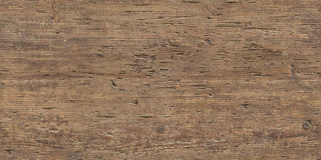

<a-assets>
  
</a-assets>
<a-light type="ambient" color="white"></a-light>
<a-box src="#texture" width="10" height="0.01" depth="50" repeat="5 10"></a-box>
<a-box color="#eee9e9" width="10" height="0.01" depth="50" position="5 5 0" rotation="0 0 90"></a-box>
<a-box color="#eee9e9" width="10" height="0.01" depth="50" position="-5 5 0" rotation="0 0 90"></a-box>